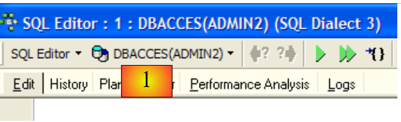
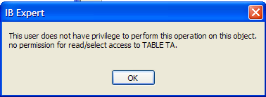
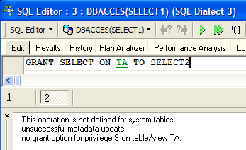
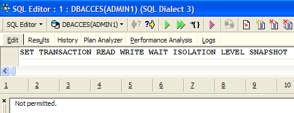
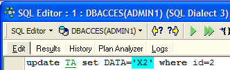
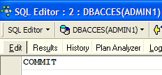
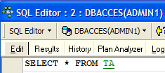
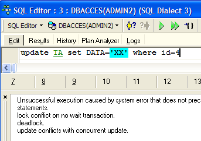
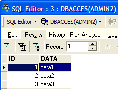
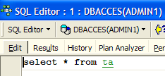

7. Verwaltung des gleichzeitigen Zugriffs auf Daten
Bisher haben wir Tabellen verwendet, deren einzige Benutzer wir waren. In der Praxis werden Daten auf einem Mehrbenutzer-Rechner meist von verschiedenen Benutzern gemeinsam genutzt. Dies wirft die Frage auf: Wer darf eine bestimmte Tabelle nutzen und in welcher Funktion (Abfrage, Einfügen, Löschen, Anhängen, ...)?
7.1. Firebird-Benutzer anlegen
Bei der Arbeit mit IB-Expert haben wir uns als SYSDBA-Benutzer angemeldet. Diese Information finden Sie in den Eigenschaften der offenen Verbindung zum DBMS:
 |  |
Rechts sehen wir, dass der angemeldete Benutzer [SYSDBA] ist. Was wir nicht sehen, ist dessen Passwort [masterkey]. [SYSDBA] ist ein spezieller Firebird-Benutzer: Er verfügt über volle Berechtigungen für alle vom DBMS verwalteten Objekte. Sie können in IBExpert neue Benutzer über die Option [Tools / User Manager] oder das folgende Symbol erstellen:

Dadurch wird das Fenster zur Benutzerverwaltung geöffnet:

Über die Schaltfläche [Hinzufügen] können Sie neue Benutzer anlegen:

Lassen Sie uns die folgenden Benutzer anlegen:
Benutzername | Passwort |
ADMIN1 | admin1 |
ADMIN2 | admin2 |
SELECT1 | select1 |
SELECT2 | select2 |
UPDATE1 | update1 |
UPDATE2 | Update 2 |
7.2. Zugriffsrechte für Benutzer gewähren
Eine Datenbank gehört dem Benutzer, der sie erstellt hat. Die bisher erstellten Datenbanken gehörten dem Benutzer [SYSDBA]. Um das Konzept der Berechtigungen zu veranschaulichen, erstellen wir (Datenbank / Datenbank erstellen) eine neue Datenbank unter der Identität [ADMIN1, admin1]:

und registrieren sie unter dem Alias DBACCES (ADMIN1). Durch die Verwendung von Aliasen können Sie Verbindungen zur selben Datenbank mit unterschiedlichen Benutzernamen herstellen, wodurch diese im IBExpert-Datenbank-Explorer leichter zu identifizieren sind. :
 |  |
Erstellen wir nun die folgenden beiden Tabellen, TA und TB:
Tabelle TA
 |
Tabelle TB
 |
Diese Tabellen stehen in keinem Zusammenhang miteinander.
Lassen Sie uns mit IB-Expert eine zweite Verbindung zur Datenbank [DBACCES] erstellen, diesmal unter dem Namen [ADMIN2 / admin2]. Dazu verwenden wir die Option [Datenbank / Datenbank registrieren]:
 |  |
Wählen Sie DBACCES(ADMIN2) aus und öffnen Sie einen SQL-Editor (Umschalt + F12):
 |
Wir haben die Möglichkeit, verschiedene Verbindungen zur selben Datenbank [DBACCES] zu nutzen. Für jede davon steht ein SQL-Editor zur Verfügung. In [1] zeigt der SQL-Editor den Alias der verbundenen Datenbank an. Anhand dieser Information können Sie feststellen, in welchem SQL-Editor Sie sich befinden. Dies ist wichtig, da wir Verbindungen erstellen werden, die nicht über dieselben Zugriffsrechte auf die Datenbankobjekte verfügen.
Lassen Sie uns den Inhalt der Tabelle TA abfragen:

Wir erhalten die folgende Fehlermeldung:

Was bedeutet das? Die Datenbank [DBACCESS] wurde vom Benutzer [ADMIN1] erstellt und gehört daher diesem. Nur er hat Zugriff auf die verschiedenen Objekte in dieser Datenbank. Er kann anderen Benutzern mit dem SQL-Befehl GRANT Zugriffsrechte gewähren. Dieser Befehl hat verschiedene Syntaxvarianten. Eine davon lautet wie folgt:
GRANT Berechtigung1, Berechtigung2, ...| ALL PRIVILEGES ON Tabelle/Ansicht AN Benutzer1, Benutzer2, ...| PUBLIC [ MIT GRANT-OPTION ] | |
gewährt einem bestimmten Benutzer oder allen Benutzern (PUBLIC) bestimmte Zugriffsrechte oder alle Rechte (ALL PRIVILEGES) auf die Tabelle oder Ansicht. Die WITH GRANT OPTION-Klausel ermöglicht es Benutzern, denen Rechte gewährt wurden, diese wiederum an andere Benutzer weiterzugeben. |
Zu den Berechtigungen, die erteilt werden können, gehören die folgenden:
das Recht, den Befehl DELETE für die Tabelle oder Ansicht zu verwenden. | |
das Recht, den Befehl INSERT für die Tabelle oder Ansicht zu verwenden | |
Berechtigung zur Verwendung des SELECT-Befehls für die Tabelle oder Ansicht | |
Berechtigung zur Verwendung des UPDATE-Befehls für die Tabelle oder Ansicht. Diese Berechtigung kann mithilfe der folgenden Syntax auf bestimmte Spalten beschränkt werden: GRANT update (col1, col2, ...) ON table/view TO user1, user2, ...| PUBLIC [WITH GRANT OPTION] |
Wir erteilen dem Benutzer [ADMIN2] die SELECT-Berechtigung für die Tabelle TA. Nur der Tabellenbesitzer kann diese Berechtigung erteilen, in diesem Fall also [ADMIN1]. Wechseln Sie zur Verbindung DBACCES(ADMIN1) und öffnen Sie einen neuen SQL-Editor (Umschalt+F12):

Von nun an werden wir zwischen den beiden SQL-Editoren wechseln. Um zwischen ihnen zu navigieren, können Sie die Menüoption [Windows] verwenden:

Oben sehen wir die beiden SQL-Editoren, die jeweils einem bestimmten Benutzer zugeordnet sind. Kehren wir zum SQL-Editor (ADMIN1) zurück und geben wir den folgenden Befehl ein:

Bestätigen Sie ihn anschließend mit einem COMMIT:

Wechseln wir nun zum Editor des Benutzers ADMIN2, um die fehlgeschlagene SELECT-Anweisung erneut auszuführen:
Wir erhalten die folgende Fehlermeldung:
Der Benutzer [ADMIN2] hat immer noch keine Berechtigung, die Tabelle [TA] anzuzeigen. Tatsächlich scheint es so zu sein, dass die Berechtigungen eines Benutzers beim Anmelden geladen werden. [ADMIN2] hätte daher immer noch dieselben Berechtigungen wie beim ersten Anmelden, d. h. keine. Lassen Sie uns dies überprüfen. Melden Sie den Benutzer [ADMIN2] ab:
- Wählen Sie seine Verbindung aus
- Fordern Sie die Abmeldung an, indem Sie mit der rechten Maustaste auf die Verbindung klicken und die Option [Von der Datenbank trennen] auswählen oder (Umschalt + Strg + D)

Wenn ein Dialogfeld zur Bestätigung eines [COMMIT] erscheint, führen Sie den [COMMIT] aus. Stellen Sie dann die Verbindung für den Benutzer [ADMIN2] wieder her, indem Sie oben die Option [Reconnect] auswählen. Kehren Sie anschließend zum SQL-Editor (ADMIN2) zurück und führen Sie die SELECT-Abfrage, die fehlgeschlagen ist, erneut aus:
Wir erhalten dann das folgende Ergebnis:

Diesmal kann ADMIN2 die Tabelle TA einsehen, dank der SELECT-Berechtigung, die ihm vom Eigentümer ADMIN1 gewährt wurde. Normalerweise ist dies die einzige Berechtigung, über die er verfügt. Lassen Sie uns dies überprüfen. Immer noch im SQL-Editor (ADMIN2):
 |  |
Der Bildschirm auf der rechten Seite zeigt, dass ADMIN2 keine DELETE-Berechtigung für die Tabelle TA hat.
Kehren wir zum SQL-Editor (ADMIN1) zurück, um dem Benutzer ADMIN2 zusätzliche Rechte zu erteilen. Wir führen nacheinander die folgenden beiden Befehle aus:
 |  |
- Der erste Befehl gewährt dem Benutzer ADMIN2 volle Zugriffsrechte auf die Tabelle [TA] sowie die Möglichkeit, anderen Benutzern Rechte zu gewähren (WITH GRANT OPTION)
- Der zweite Befehl bestätigt den vorherigen
Sobald dies erledigt ist, aktualisieren wir wie zuvor die Verbindung des Benutzers [ADMIN2] (Trennen / Erneut verbinden) und geben dann im SQL-Editor (ADMIN2) die folgenden Befehle ein:
 |  |  |
ADMIN2 konnte alle Zeilen aus der Tabelle TA löschen. Machen wir diese Löschung mit einem ROLLBACK rückgängig:
 | |  |
Lassen Sie uns überprüfen, ob ADMIN2 nun seinerseits Berechtigungen für die TA-Tabelle erteilen kann.
 |  |
Öffnen wir nun eine Verbindung zur Datenbank [DBACCES] (Datenbank / Datenbank registrieren) unter dem Namen [SELECT1 / select1], einem der zuvor angelegten Benutzer, und doppelklicken wir dann auf den im [Datenbank-Explorer] erstellten Link:
 |  |
Wechseln Sie zu dieser neuen Verbindung und öffnen Sie einen neuen SQL-Editor (Umschalt + F12), um die folgenden Befehle einzugeben:
 |  |
Der Benutzer SELECT1 verfügt tatsächlich über SELECT-Rechte für die Tabelle TA. Kann er dieses Recht an den Benutzer SELECT2 übertragen?
 |
Der Vorgang ist fehlgeschlagen, da der Benutzer SELECT1 nicht die Berechtigung erhalten hat, das SELECT-Privileg weiterzugeben, das er vom Benutzer ADMIN2 erhalten hat. Damit dies möglich wäre, hätte der Benutzer ADMIN2 in seiner SQL-GRANT-Anweisung die Klausel WITH GRANT OPTION verwenden müssen. Die Regeln für die Vergabe von Privilegien sind einfach:
- Ein Benutzer kann nur die Berechtigungen gewähren, die er selbst erhalten hat, und nichts darüber hinaus
- und er kann sie nur weitergeben, wenn er sie mit der [WITH GRANT OPTION]-Berechtigung erhalten hat
Ein erteiltes Privileg kann mit der REVOKE-Anweisung widerrufen werden:
REVOKE Berechtigung1, Berechtigung2, ...| ALL PRIVILEGES ON Tabelle/Ansicht FROM user1, user2, ...| PUBLIC | |
entzieht Benutzern (user1, user2, ...) oder allen Benutzern (PUBLIC) Zugriffsrechte (privilege1) oder alle Rechte (ALL PRIVILEGES) auf die Tabelle oder Ansicht. |
Probieren wir es aus. Kehren Sie zum ADMIN2-SQL-Editor zurück, um das SELECT-Privileg zu entfernen, das wir dem Benutzer SELECT1 gewährt haben:
 |  |
Trennen wir die Verbindung und stellen wir sie für die Sitzung des Benutzers SELECT1 wieder her. Abfragen wir dann im SQL-Editor (SELECT1) den Inhalt der Tabelle TA ab:
 |  |
Der Benutzer SELECT1 hat tatsächlich seine SELECT-Berechtigung für die Tabelle TA verloren. Beachten Sie, dass es ADMIN2 war, der diese Berechtigung erteilt hat, und dass es ADMIN2 war, der sie widerrufen hat. Wenn ADMIN1 versucht, sie zu widerrufen, wird kein Fehler gemeldet, aber wir können dann sehen, dass SELECT1 seine SELECT-Berechtigung behalten hat.
Eine Berechtigung kann mit der folgenden Syntax für alle Benutzer erteilt werden: GRANT Berechtigung(en) ON Tabelle / Ansicht TO PUBLIC. Erteilen wir allen Benutzern die SELECT-Berechtigung für die Tabelle TA. Dazu können wir entweder ADMIN1 oder ADMIN2 verwenden. Wir verwenden ADMIN2:
 |  |
Stellen wir eine Verbindung zur Datenbank mit dem Benutzer USER1 / user1 her:
 |  |
Öffnen Sie mit der Verbindung DBACCES(USER1) einen neuen SQL-Editor (Umschalt + F12) und geben Sie die folgenden Befehle ein:
 |  |
Der Benutzer USER1 verfügt tatsächlich über SELECT-Berechtigungen für die Tabelle TA.
7.3. Transaktionen
7.3.1. Isolationsstufen
Wir wenden uns nun vom Thema Zugriffsrechte auf Datenbankobjekte ab und befassen uns mit dem gleichzeitigen Zugriff auf diese Objekte. Zwei Benutzer mit ausreichenden Zugriffsrechten auf ein Datenbankobjekt – beispielsweise eine Tabelle – möchten dieses gleichzeitig nutzen. Was passiert?
Jeder Benutzer arbeitet innerhalb einer Transaktion. Eine Transaktion ist eine Abfolge von SQL-Anweisungen, die „atomar“ ausgeführt wird:
- Entweder sind alle Operationen erfolgreich
- oder eine davon schlägt fehl; in diesem Fall werden alle vorhergehenden rückgängig gemacht
Letztendlich werden die Operationen in einer Transaktion entweder alle erfolgreich angewendet oder gar keine. Wenn der Benutzer die Kontrolle über die Transaktion hat (wie es in diesem Dokument durchgehend der Fall ist), bestätigt er eine Transaktion mit einer COMMIT-Anweisung oder macht sie mit einer ROLLBACK-Anweisung rückgängig.
Jeder Benutzer arbeitet innerhalb einer Transaktion, die ihm gehört. Es gibt in der Regel vier Isolationsstufen zwischen verschiedenen Benutzern:
- Uncommitted Read
- Committed Read
- Wiederholbares Lesen
- Serialisierbar
Uncommitted Read
Diese Isolationsstufe wird auch als „Dirty Read“ bezeichnet. Hier ein Beispiel dafür, was in diesem Modus passieren kann:
- Benutzer U1 startet eine Transaktion für die Tabelle T
- Benutzer U2 startet eine Transaktion auf derselben Tabelle T
- Benutzer U1 ändert Zeilen in Tabelle T, hat diese Änderungen jedoch noch nicht festgeschrieben
- Benutzer U2 „sieht“ diese Änderungen und trifft Entscheidungen auf der Grundlage dessen, was er sieht
- Der Benutzer rollt seine Transaktion mit einem ROLLBACK zurück
Wir sehen, dass Benutzer U2 in Schritt 4 eine Entscheidung auf der Grundlage von Daten getroffen hat, die sich später als falsch herausstellen werden.
Committed Read
Diese Isolationsstufe vermeidet die zuvor beschriebene Gefahr. In diesem Modus „sieht“ Benutzer U2 in Schritt 4 die von Benutzer U1 an Tabelle T vorgenommenen Änderungen nicht. Er sieht sie erst, nachdem U1 seine Transaktion festgeschrieben hat.
In diesem Modus, der auch als „Unrepeatable Read“ (nicht wiederholbare Leseoperation) bezeichnet wird, können folgende Situationen auftreten:
- Ein Benutzer U1 startet eine Transaktion für die Tabelle T
- Benutzer U2 startet eine Transaktion für dieselbe Tabelle T
- Benutzer U2 führt einen SELECT-Befehl aus, um den Durchschnitt der Spalte C aus den Zeilen von T zu ermitteln, die eine bestimmte Bedingung erfüllen
- Benutzer U1 ändert (UPDATE) bestimmte Werte in Spalte C von T und bestätigt (COMMIT) die Änderungen
- Benutzer U2 wiederholt denselben SELECT-Befehl wie in Schritt 3. Er wird feststellen, dass sich der Durchschnitt der Spalte C aufgrund der von U1 vorgenommenen Änderungen geändert hat.
Nun sieht Benutzer U2 nur die von U1 „festgeschriebenen“ Änderungen. Doch obwohl sie sich in derselben Transaktion befinden, führen zwei identische Operationen (Schritte 3 und 5) zu unterschiedlichen Ergebnissen. Der Begriff „Unrepeatable Read“ (nicht wiederholbare Leseoperation) bezeichnet diese Situation. Dies ist problematisch für jemanden, der eine konsistente Ansicht der Tabelle T wünscht.
Wiederholbare Leseoperation
In dieser Isolationsstufe ist einem Benutzer garantiert, dass er bei seinen Datenbankabfragen dieselben Ergebnisse erhält, solange er innerhalb derselben Transaktion bleibt. Er arbeitet mit einem Snapshot, der niemals Änderungen widerspiegelt, die von anderen Transaktionen vorgenommen wurden, selbst wenn diese Änderungen bereits festgeschrieben wurden. Er sieht diese Änderungen erst, wenn er selbst seine Transaktion mit einem COMMIT oder ROLLBACK beendet.
Diese Isolationsstufe ist jedoch noch nicht perfekt. Nach dem oben genannten Vorgang 3 sind die von Benutzer U2 abgefragten Zeilen gesperrt. Während des Vorgangs 4 kann Benutzer U1 die Werte in Spalte C dieser Zeilen nicht ändern (UPDATE). Er kann jedoch neue Zeilen hinzufügen (INSERT). Wenn einige der hinzugefügten Zeilen die in 3 getestete Bedingung erfüllen, liefert der Vorgang 5 aufgrund der hinzugefügten Zeilen einen anderen Durchschnittswert als den in 3 ermittelten.
Um dieses neue Problem zu beheben, müssen Sie zur Isolationsstufe „Serializable“ wechseln.
Serialisierbar
In diesem Isolationsmodus sind Transaktionen vollständig voneinander isoliert. Dies stellt sicher, dass das Ergebnis zweier gleichzeitig ausgeführter Transaktionen dasselbe ist, als wären sie nacheinander ausgeführt worden. Um dieses Ergebnis zu erzielen, wird Benutzer U1 während Schritt 4 daran gehindert, Zeilen hinzuzufügen, die das Ergebnis der SELECT-Anweisung von Benutzer U1 verändern würden. Eine Fehlermeldung informiert ihn darüber, dass das Einfügen nicht möglich ist. Es wird erst möglich, sobald Benutzer U2 seine Transaktion festgeschrieben hat.
Die vier SQL-Transaktionsisolationsstufen sind nicht in allen DBMS verfügbar. Firebird bietet die folgenden Isolationsstufen:
- snapshot: Standard-Isolationsmodus. Entspricht dem Modus „Repeatable Read“ des SQL-Standards.
- committed read: entspricht dem Modus „committed read“ des SQL-Standards
Diese Isolationsstufe wird mit dem Befehl SET TRANSACTION festgelegt:
SET TRANSACTION [READ WRITE | READ ONLY] [WAIT|NOWAIT] ISOLATIONSEBENE [SNAPSHOT | READ COMMITTED] | |
Unterstrichene Schlüsselwörter sind die Standardwerte READ WRITE: Die Transaktion kann lesen und schreiben READ ONLY: Die Transaktion kann nur lesen WAIT: Im Falle eines Konflikts zwischen zwei Transaktionen wartet diejenige, die ihren Vorgang nicht abschließen konnte, bis die andere Transaktion abgeschlossen ist. Sie kann keine SQL-Anweisungen mehr ausführen. NOWAIT: Die Transaktion, die ihren Vorgang nicht abschließen konnte, wird nicht blockiert. Sie erhält eine Fehlermeldung und kann weiterarbeiten. ISOLATION LEVEL [SNAPSHOT | READ COMMITTED]: Isolationsstufe |
Probieren wir es aus. Geben Sie im SQL-Editor (ADMIN1) den folgenden SQL-Befehl ein:

Wir sehen, dass er nicht autorisiert wurde. Wir wissen nicht, warum...
Mit IB-Expert können Sie den Isolationsmodus auf andere Weise festlegen. Klicken Sie mit der rechten Maustaste auf die Verbindung DBACCES(ADMIN1), um die Option [Database Registration Info] auszuwählen:
 |  |
Der Bildschirm auf der rechten Seite zeigt die Option [Transaktionen]. Hier können wir die Transaktionsisolationsstufe festlegen. Wir stellen sie hier auf [Snapshot] ein. Dasselbe tun wir mit der Verbindung DBACCES(ADMIN2).
7.3.2. Snapshot-Modus
Betrachten wir nun die Snapshot-Isolationsstufe, den Standard-Isolationsmodus von Firebird. Wenn ein Benutzer eine Transaktion startet, wird ein Snapshot der Datenbank erstellt. Der Benutzer arbeitet dann an diesem Snapshot. Jeder Benutzer arbeitet somit an seinem eigenen Snapshot der Datenbank. Wenn er Änderungen daran vornimmt, sind diese für andere Benutzer nicht sichtbar. Sie werden erst sichtbar, sobald der Benutzer, der die Änderungen vorgenommen hat, diese mit einem COMMIT festgeschrieben hat.
Es gibt zwei mögliche Szenarien:
- Ein Benutzer liest die Tabelle (SELECT), während ein anderer sie ändert (INSERT, UPDATE, DELETE)
- Beide Benutzer möchten die Tabelle gleichzeitig ändern
7.3.2.1. Prinzip des konsistenten Lesens
Betrachten wir zwei Benutzer, U1 und U2, die an derselben Tabelle TAB arbeiten:
Die Transaktion von Benutzer U1 beginnt zum Zeitpunkt T1a und endet zum Zeitpunkt T1b.
Die Transaktion von Benutzer U2 beginnt zum Zeitpunkt T2a und endet zum Zeitpunkt T2b.
U1 arbeitet mit einem Snapshot von TAB, der zum Zeitpunkt T1a erstellt wurde. Zwischen T1a und T1b ändern sie TAB. Andere Benutzer haben erst ab dem Zeitpunkt T1b Zugriff auf diese Änderungen, wenn U1 einen COMMIT ausführt.
U2 arbeitet mit einem Snapshot von TAB, der zum Zeitpunkt T2a erstellt wurde; dies ist derselbe Snapshot, den auch U1 verwendet (vorausgesetzt, keine anderen Benutzer haben das Original in der Zwischenzeit geändert). Er „sieht“ die Änderungen, die Benutzer U1 möglicherweise an TAB vorgenommen hat, nicht. Er kann sie erst zum Zeitpunkt T1b sehen.
Veranschaulichen wir diesen Punkt anhand unserer Datenbank [DBACCES]. Wir lassen die beiden Benutzer [ADMIN1] und [ADMIN2] gleichzeitig arbeiten. Wechseln wir zur Verbindung DBACCES(ADMIN1) und führen wir im SQL-Editor von ADMIN1 die folgenden Operationen durch:
 |  |  |
ADMIN1 hat Zeile 2 der Tabelle TA geändert, den Vorgang jedoch noch nicht bestätigt (COMMIT). Der Benutzer ADMIN2 führt nun eine SELECT-Abfrage auf die Tabelle TA aus (wir wechseln zum SQL-Editor von ADMIN2). Wir befinden uns im Beispiel vor dem Zeitpunkt T2a.
 |  |
Zurück im SQL-Editor von ADMIN1, der die Aktualisierung festschreibt:
 |
Zurück im SQL-Editor von ADMIN2, um die SELECT-Anweisung erneut auszuführen:
|  |
ADMIN2 sieht die von ADMIN1 vorgenommenen Änderungen. Im Snapshot-Modus sieht eine Transaktion die von anderen Transaktionen vorgenommenen Änderungen erst, wenn diese Transaktionen abgeschlossen sind.
7.3.2.2. Gleichzeitige Änderung desselben Datenbankobjekts durch zwei Transaktionen
Nehmen wir ein Beispiel aus der Buchhaltung: U1 und U2 arbeiten an Konten. U1 belastet das Konto X mit einem Betrag S und schreibt denselben Betrag dem Konto Y gut. Er führt dies in mehreren Schritten durch:
U1 beginnt eine Transaktion zum Zeitpunkt T1a, belastet comptex zum Zeitpunkt T1b, schreibt comptey zum Zeitpunkt T1c gut und führt beide Vorgänge zum Zeitpunkt T1d ab. Nehmen wir ferner an, dass U2 dasselbe tun möchte, seine Transaktion zum Zeitpunkt T2a beginnt und sie gemäß dem folgenden Schema zum Zeitpunkt T2d beendet:
--------+----------+----+----+-------+------+-----+-------+---------
T1a T1b T2a T1c T2b T1d T2c T2d
Zum Zeitpunkt T2 wird für U2 eine Momentaufnahme der Kontotabelle erstellt. Diese ist gemäß dem Momentaufnahme-Prinzip konsistent. U2 sieht den Ausgangszustand der Konten comptex und comptey, da U1 seine Transaktionen noch nicht festgeschrieben hat.
Angenommen, comptex hat einen Anfangssaldo von 1.000 € und sowohl Benutzer U1 als auch U2 möchten 100 € abbuchen.
- Zum Zeitpunkt T1b belastet U1 das Konto „comptex“ mit 100 €, wodurch sich der Saldo auf 90 € verringert. Diese Transaktion wird erst zum Zeitpunkt T1d festgeschrieben.
- Zum Zeitpunkt T2b sieht U2 comptex mit 1.000 € (Prinzip der konsistenten Lesezugriffe) und belastet es mit 100 €, wodurch der Saldo auf 90 € sinkt.
- Letztendlich wird comptex zum Zeitpunkt T2d, wenn alles validiert wurde, einen Saldo von 90 € statt der erwarteten 80 € aufweisen.
Die Lösung für dieses Problem besteht darin, U2 daran zu hindern, comptex zu ändern, bis U1 seine Transaktion abgeschlossen hat. U2 wird somit bis zum Zeitpunkt T1d blockiert. Der Snapshot-Modus bietet diesen Mechanismus.
Veranschaulichen wir dies anhand der Datenbank DBACCES. ADMIN1 startet eine Transaktion in seinem SQL-Editor (ADMIN1):
 |  |  |  |
Wir haben zunächst einen COMMIT-Befehl ausgegeben, um sicherzustellen, dass wir eine neue Transaktion starten. Dann haben wir Zeile 4 gelöscht. Die Transaktion wurde noch nicht festgeschrieben.
ADMIN2 startet daraufhin eine Transaktion in seinem SQL-Editor (ADMIN2):
 |  |
Der Bildschirm auf der rechten Seite zeigt, dass ADMIN2 versucht hat, Zeile 4 zu ändern. Er wurde darüber informiert, dass dies nicht möglich war, da jemand anderes die Zeile bereits geändert, die Änderung aber noch nicht festgeschrieben hatte.
Kehren wir zum SQL-Editor (ADMIN1) zurück, um den COMMIT auszuführen:

Kehren wir zum SQL-Editor (ADMIN2) zurück, um den UPDATE-Befehl erneut auszuführen:
 |  |
 |  |
Die UPDATE-Operation wird erfolgreich abgeschlossen, obwohl Zeile Nr. 4 nicht mehr existiert, wie die folgende SELECT-Anweisung zeigt. An dieser Stelle stellt ADMIN2 fest, dass die Zeile nicht mehr existiert.
7.3.2.3. Modus „Repeatable Read“
Lassen Sie uns nun den Modus „Repeatable Read“ veranschaulichen. Diese Isolationsstufe wird durch den „Snapshot“-Modus bereitgestellt. Sie stellt sicher, dass eine Transaktion beim Lesen der Datenbank immer das gleiche Ergebnis erhält.
Beginnen wir mit dem SQL-Editor von ADMIN2:
 |  |  |
 |  |
Wechseln wir nun zum SQL-Editor von ADMIN1:
 |  |  |
 |  |  |
 |  |
Der Benutzer ADMIN1 hat zwei Zeilen hinzugefügt und die Transaktion abgeschlossen. Kehren wir nun zum SQL-Editor (ADMIN2) zurück, um die SELECT SUM-Anweisung erneut auszuführen:
 |  |
Wir sehen, dass ADMIN2 die von ADMIN1 hinzugefügten Zeilen nicht sieht, obwohl sie mit einem COMMIT bestätigt wurden. Die SELECT SUM-Anweisung liefert dasselbe Ergebnis wie vor den Ergänzungen. Dies ist das Prinzip des „Repeatable Read“.
Nun, immer noch im SQL-Editor (ADMIN2), lassen Sie uns die Transaktion mit einem COMMIT festschreiben und dann die SELECT SUM erneut ausführen:
 |  |  |
Die von ADMIN1 hinzugefügten Zeilen werden nun berücksichtigt.
7.3.3. Committed-Read-Modus
Lassen Sie uns nun den Modus „Committed Read“ veranschaulichen. Diese Isolationsstufe ähnelt der eines Snapshots, mit Ausnahme des „Repeatable Read“.
Zunächst ändern wir die Transaktionsisolationsstufe für beide Verbindungen.
- Wir trennen die Verbindung der beiden Benutzer ADMIN1 und ADMIN2
- Wir ändern die Isolationsstufe ihrer Transaktionen

- Wir stellen die Verbindung zu den Benutzern ADMIN1 und ADMIN2 wieder her
Wir werden nun das vorherige Beispiel, das „Repeatable Read“ veranschaulichte, noch einmal betrachten, um zu zeigen, dass wir nicht mehr dasselbe Verhalten beobachten. Beginnen wir mit dem SQL-Editor von ADMIN2:
| | |
| |
Wechseln wir nun zum SQL-Editor von ADMIN1:
| |
| | |
| |
Der Benutzer ADMIN1 hat zwei Zeilen hinzugefügt und seine Transaktion abgeschlossen. Kehren wir nun zum SQL-Editor (ADMIN2) zurück, um die SELECT SUM-Anweisung erneut auszuführen:
|  |
Die SELECT SUM-Anweisung liefert nicht dasselbe Ergebnis wie vor den Hinzufügungen durch ADMIN1. Dies ist der Unterschied zwischen dem Snapshot- und dem Read-Committed-Modus.